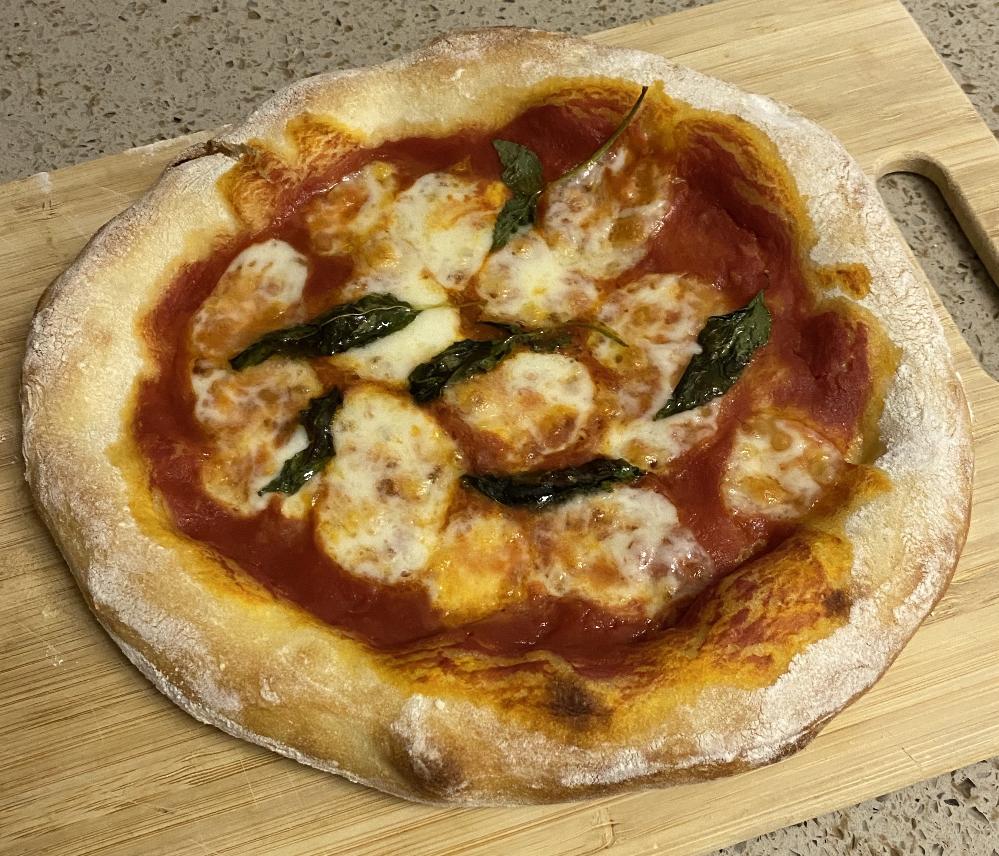
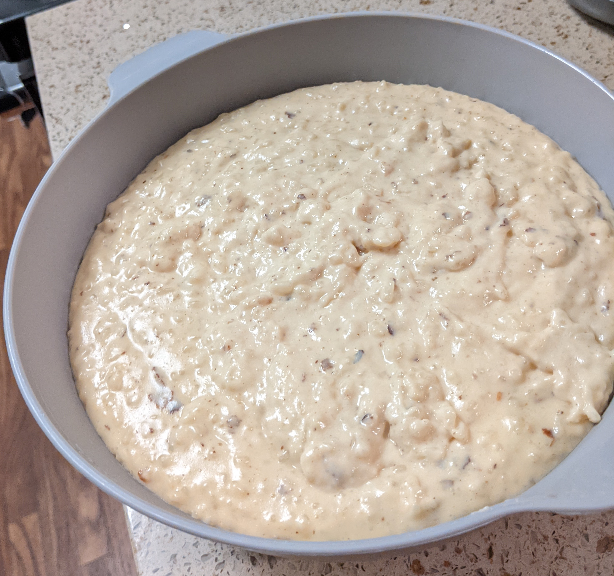

Cooking
Last updated: Mar 24, 2023
I don’t like cooking, but I do enjoy making and eating the following recipes.
Pizza Margherita
The following makes 2 individual pizza pies.
Ingredients
- 200 ml of water.
- 1-2 g of dry yeast.
- 300 g of strong flour.
- 5 g of salt.
- Tomato sauce (I prefer Cento’s puree).
- Fresh mozzarella balls.
- Basil.
- Olive oil.
Tools
Required:
- Oven.
- Measuring cup.
- Mixing bowl/container.
- Container for first rest of entire dough.
- Container(s) for second rest of individual dough balls.
- Pizza peel.
- Pizza stone or baking tray.
- Pizza wheel, cutter, or knife.
Optional:
- Wooden spoon.
- Basting brush.
- Knife.
Steps
- 200 ml of water mixed with 1-2 g of dry yeast.
- Can be done in the measuring cup.
- Mix until yeast is properly melted.
- 300 g of flour mixed with 5 g of salt.
- Pour water+yeast into flour+salt.
- Mix.
- Using a wooden spoon makes it easier.
- Can be done with hands.
- Take out and knead for ~12 mins.
- Oil the resting container.
- Can be done with a basting brush.
- Put dough in resting container.
- Rest dough for 20+ mins.
- Split dough into 2 balls.
- Can be done with a knife.
- Rest dough balls for 45+ mins.
- Preheat oven for 20 minutes at max temperature.
- Shape the dough.
- Add sauce, mozzarella, basil, and olive oil.
- Add flour to peel and oven stone.
- Put pizza on peel.
- Bake for 5-8 mins.
Result

Bolitas de Nuez (Nut Balls)
Ingredients
- 1 can of La Lechera (condensed milk). 375 g (284.1 ml).
- 200-300 g of pecan nuts.
- 1 pack of Galletas Marías (Marie biscuit). 138.91 g (4.9 oz).
- ~100 g of powdered sugar.
Tools
Required:
- Food processor (or something to fine grind the nuts and Marías).
- Big bowl.
- Tray.
Optional:
- Spoon.
Steps
- Grind the pecan nuts and Marías, then put them in the big bowl.
- Put the powdered sugar in the tray.
- Slowly add the La Lechera to the big bowl while mixing the contents.
- Keep mixing with fingers or spoon until it’s well mixed.
- Start making the balls by grabbing a chunk of the mixture and then rolling them in your hands into a ball.
- As soon as the ball has the proper compression and shape, put it on the sugar tray and roll it around so it gets covered in sugar.
Result
TBD!
Arroz con Leche
Ingredients
- 1 cup of rice.
- 1/2 gal of milk.
- 1 can of Carnation (evaporated milk). 360 g (339.9 ml).
- 2 cinnamon sticks.
- 1 can of La Lechera (condensed milk). 375 g (284.1 ml).
- Vanilla extract.
Tools
Required:
- Stove or range.
- Steel pot.
- Wooden spoon.
- Plastic bowl.
Steps
- Add the rice to bowl of room temperature water, leave it there for at least 2 hours.
- Drain the water out and rinse the rice a few times until the water is clear.
- Set-up a stainless steel pot in the stove.
- Add the 1/2 gal of milk to the pot.
- Add the Carnation to the pot.
- Heat the pot up a bit.
- Add rice to the pot.
- Add 2 cinnamon sticks to the pot.
- Stir the pot semi-frequently until the milk is fluffy/frothy.
- Add the La Lechera.
- Stir the pot constantly for 30-45 mins.
- The longer you stir, the more solid its consistency will be.
- Add ~2 caps of vanilla extract.
- Stir for at least 30 seconds.
- Turn off the stove and let it cool for a while.
- Transfer it to the plastic bowl and let it cool down.
- Store in the fridge.
Result
My first attempt, where I accidentally ended up with a bunch of chunks of cinnamon and added too much vanilla:
